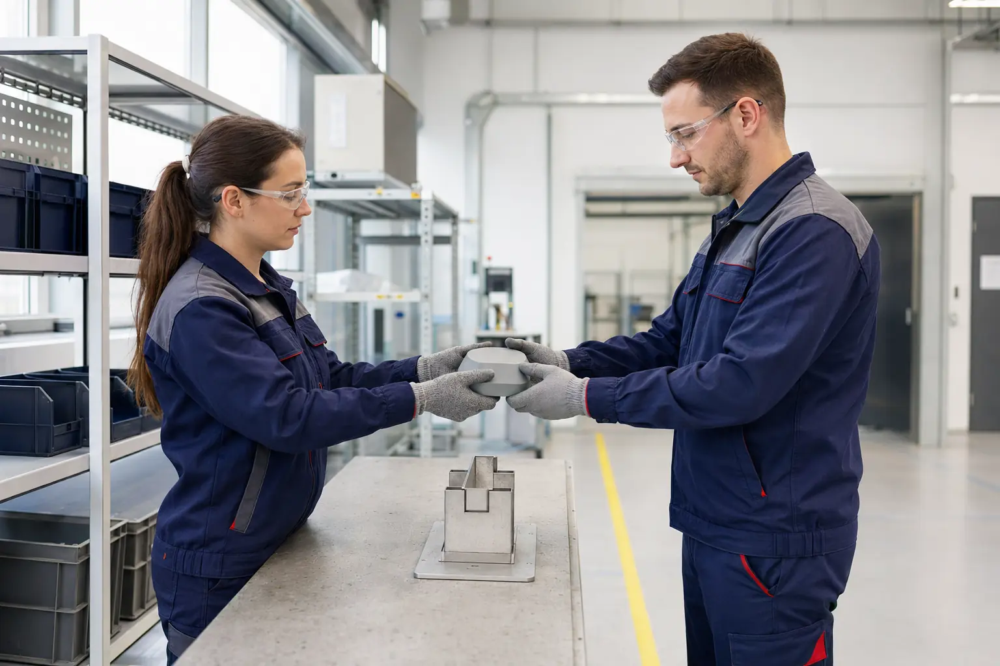

Je veux confier un processus
Décrivez le processus, le volume, le lieu et l'échéance. Nous proposerons un périmètre, des KPI, un modèle de facturation et un plan de démarrage réaliste.
Demander une offre d'externalisation →Equss Outsourcing reprend des processus dans la production, la logistique, le transport, l'hôtellerie, le nettoyage et la construction — en Pologne et dans 36 pays d'Europe. Nous facturons sur la base d'un résultat convenu.

Equss Outsourcing en une phrase : Equss Outsourcing est une société d'externalisation de Varsovie (EQUSS Prosta Spółka Akcyjna, KRS 0001275598) qui reprend des processus opérationnels et organise des équipes pour la production, la logistique, le transport (chauffeurs permis B, C, CE), l'hôtellerie, la restauration, le nettoyage, l'agriculture et la construction en Pologne et dans 36 autres pays d'Europe.
Nous ne sommes pas une agence d'intérim. Nous reprenons des processus et répondons de leur résultat — en Pologne et à l'étranger.
Décrivez le processus, le volume, le lieu et l'échéance. Nous proposerons un périmètre, des KPI, un modèle de facturation et un plan de démarrage réaliste.
Demander une offre d'externalisation →
Des projets dans 37 pays d'Europe — de l'Allemagne et la Lituanie à l'Espagne, la Scandinavie et les Balkans. Nous vérifions chaque pays séparément.
Voir les pays →
Nous constituons des équipes à partir de personnel recruté par des partenaires en Asie, en Afrique, dans les deux Amériques et dans les Balkans — après vérification du parcours juridique.
Comment ça marche →
Transmettez-nous le contact d'un employeur ayant un besoin réel. Les conditions de coopération sont définies au cas par cas.
Signaler un employeur →En externalisation, c'est le prestataire qui organise le travail et répond du résultat. Le client définit les exigences et réceptionne le résultat.
Reprise d'étapes de production clairement délimitées : assemblage, conditionnement, contrôle visuel, conduite de lignes.
↗Préparation de commandes, conditionnement des expéditions, réceptions, chargement et inventaires en mode résultat.
↗Housekeeping, aide de cuisine, plonge et services de back-office — y compris en saison.
↗Nettoyage de sites de bureaux, commerciaux, logistiques et industriels.
↗Équipes de soudeurs, électriciens, monteurs et conducteurs d'engins pour des lots de travaux délimités.
↗Équipes de chauffeurs de véhicules utilitaires (B), de camions (C) et d'ensembles articulés (CE) avec code 95 (FIMO/FCO) et carte conducteur (tachygraphe).
↗Personnel d'Asie, d'Afrique, des Amériques et des Balkans — via un réseau de partenaires, après vérification du parcours juridique.
↗Vous ne savez pas quel modèle convient ?
Décrire le processusChaque projet est qualifié séparément. Nous n'annonçons ni volume ni délai avant d'avoir examiné le processus.

Préparation de commandes, conditionnement des expéditions, réceptions, chargement et inventaires.
Découvrir le modèle d'externalisation →
Assemblage, conditionnement, conduite de lignes et contrôle visuel.
Découvrir le modèle d'externalisation →
Livraisons, distribution régionale et transport international. Code 95 (FIMO/FCO) et carte conducteur (tachygraphe) vérifiés avant le démarrage.
Découvrir le modèle d'externalisation →
Housekeeping, plonge, aide de cuisine et service saisonnier.
Découvrir le modèle d'externalisation →
Soudeurs, électriciens, monteurs et conducteurs d'engins.
Découvrir le modèle d'externalisation →Sites de bureaux, commerciaux, logistiques et industriels.
Découvrir le modèle d'externalisation →La liste présente des zones d'activité, et non des commandes acquises. Nous confirmons la faisabilité pour chaque offre.

Nous confirmons le périmètre, le calendrier et les critères de réception avant de mobiliser l'équipe.
Tâches, volume, équipes, lieu et critères de réception.
Périmètre de responsabilité, KPI, modèle de facturation et calendrier.
Sélection du personnel — en local ou via des partenaires internationaux.
Démarrage contrôlé sur une partie convenue du processus.
Résultats, qualité, escalades et décision sur le passage à l'échelle.
Nous recherchons des employeurs directs ayant un besoin réel : usines, entrepôts, entreprises de transport, hôtels, restaurants, exploitations agricoles et entreprises de construction.
La FAQ précède le formulaire afin que vous puissiez évaluer le modèle et le périmètre avant tout contact.
Equss Outsourcing est une société d'externalisation. Nous reprenons des processus opérationnels convenus (par ex. préparation de commandes, conditionnement, assemblage, transport, housekeeping, nettoyage de sites, travaux auxiliaires sur chantier) et assumons leur organisation ainsi que leur résultat. Nous ne sommes pas une agence d'intérim et ne mettons pas de salariés à disposition sous la direction du client.
En externalisation, le prestataire organise le travail de sa propre équipe, l'encadre et répond du résultat convenu, tandis que le client réceptionne le résultat selon des critères définis. En travail temporaire, l'agence met des salariés à disposition d'une entreprise utilisatrice, qui dirige elle-même leur travail. Equss opère en mode externalisation.
Nous recevons les demandes d'entreprises de Pologne et de 36 autres pays d'Europe, notamment d'Allemagne, de Lituanie, de Tchéquie, des Pays-Bas, d'Autriche, d'Espagne et des pays baltes. Nous confirmons la faisabilité séparément pour chaque projet, après vérification du poste, de la réglementation et du parcours d'emploi.
Nous recrutons notre personnel via un réseau de partenaires, notamment en Inde, au Népal, au Bangladesh, au Pakistan, au Sri Lanka, aux Philippines, au Vietnam, en Ouzbékistan, au Tadjikistan et en Azerbaïdjan, ainsi que dans d'autres pays d'Asie, d'Afrique, des Amériques et dans les Balkans. Le pays d'origine est fixé séparément pour chaque projet — il dépend de la nationalité, du poste, du pays de travail et de la réglementation en vigueur.
Il n'existe pas de délai unique pour tous les pays. Le temps dépend du pays de travail, de la nationalité, de la disponibilité des documents, des autorisations requises, des accréditations et des décisions des administrations. Nous ne donnons d'estimation qu'après l'analyse d'un projet précis, et elle ne constitue pas une garantie.
La facturation correspond au périmètre et au mode de réception : à l'unité de résultat (pièce, palette, chambre, mètre), au volume, à la période ou selon une formule mixte. Les conditions financières et le contrat sont définis au cas par cas.
Indiquez le minimum nécessaire à une analyse préliminaire. Nous reviendrons avec une recommandation de périmètre et de modèle de facturation.